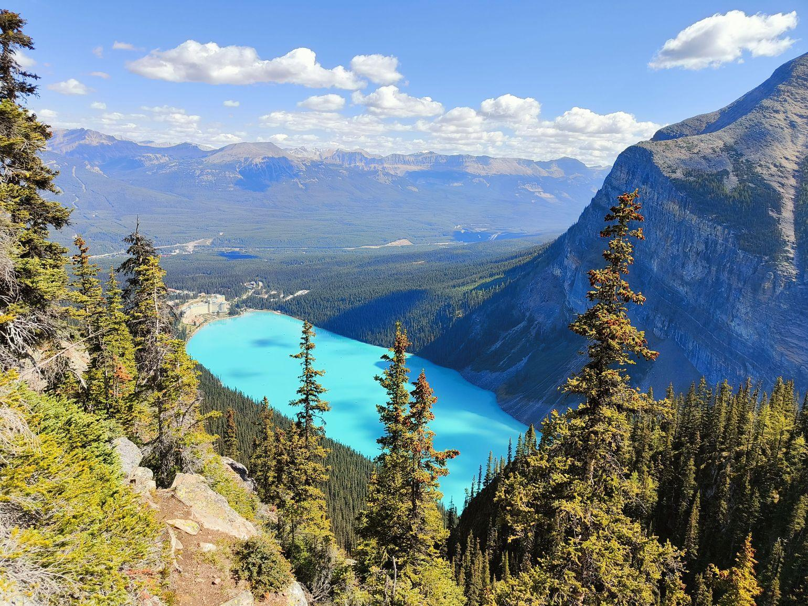

← 레이크 루이스
🥾 Big Beehive
Lake Louise
⭐ 레이크 루이스 최고의 전망을 감상하는 대표 전망 트레킹

📅 우리 일정
Day 3 오후 (체력 여유 시 추천)
🏞 기대 풍경
🏔 Big Beehive 정상 전망
💎 레이크 루이스 파노라마
🏕 Fairmont Chateau Lake Louise
🌲 Lake Agnes와 울창한 숲
📸 로키 최고의 전망 포인트
📏 기본 정보
🚶 걷는 거리
왕복 약 10.5km
⏱ 걷는 시간
약 3.5~4.5시간
💪 난이도
보통~어려움
📈 고도차
약 535m
🚻 편의시설
✔ 화장실 (레이크 루이스 주차장)
✔ Lake Agnes Tea House (중간 지점)
✔ 간단한 음식·음료 구매 가능
✖ 정상에는 편의시설 없음
🎒 준비물
👟 트레킹화 또는 접지력 좋은 운동화
💧 물 1L 이상
🧥 바람막이
🍫 간단한 간식
💡 여행 Tip
✔ Big Beehive는 Lake Agnes를 지나 조금 더 오르면 도착합니다.
✔ 정상에서는 레이크 루이스와 페어몬트 호텔을 한눈에 내려다볼 수 있습니다.
✔ 전망대에는 그늘이 거의 없으므로 모자와 선크림을 준비하면 좋습니다.
✔ 바람이 강한 날에는 정상부에서 사진 촬영 시 주의하세요.
📍 Google Maps
🗺 트레일 지도
← 레이크 루이스